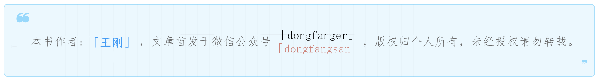

Locust性能测试工具核心技术@task和@events¶

Tasks和Events是Locust性能测试工具的核心技术，有了它们，Locust才能称得上是一个性能工具。
Tasks¶
从上篇文章知道，locustfile里面必须要有一个类，继承User类，当性能测试开始后，会产生一个User类实例，这就是常说的模拟用户。这些用户会选择task执行，休眠一会，再选择新的task，不断迭代。
task是Python中的可调用对象，它是一项任务，对于Web系统来说，可以是登录、查询、下订单、支付等等。
@task装饰器¶
@task是定义task最简单直接的方式，比如：
from locust import User, task, constant
class MyUser(User):
wait_time = constant(1)
@task
def my_task(self):
print("User instance (%r) executing my_task" % self)
@task有一个可选参数，用来设置task的选择权重，比如：
from locust import User, task, between
class MyUser(User):
wait_time = between(5, 15)
@task(3)
def task1(self):
pass
@task(6)
def task2(self):
pass
task2比task1被选择的可能性大两倍。
tasks属性¶
除了@task装饰器，还可以设置User类的tasks属性来定义任务，比如：
from locust import User, constant
def my_task(user):
pass
class MyUser(User):
tasks = [my_task]
wait_time = constant(1)
注意，my_task()函数有一个参数，它是User类的实例。
tasks可以是一个列表：
tasks = [my_task1, my_task2, my_task3]
Locust会使用Python中的random.choice()从里面随机选取。
tasks也可以是一个字典：
{my_task: 3, another_task: 1}
后面的int型键值代表的是被选择权重，这个字典等价于列表：
[my_task, my_task, my_task, another_task]
@tag装饰器¶
@tag用来打标记，在运行时选择哪些task执行，哪些task不执行。比如：
class MyUser(User):
wait_time = constant(1)
@tag('tag1')
@task
def task1(self):
pass
@tag('tag1', 'tag2')
@task
def task2(self):
pass
@tag('tag3')
@task
def task3(self):
pass
@task
def task4(self):
pass
如果使用
--tags tag1，那么只有task1和task2会被选择。如果使用
--tags tag2 tag3，那么只有task2和task3会被选择。如果使用
--exclude-tags tag3，那么只有task1、task2和task4会被选择。
注意，exclude的优先级更高，如果某个tag既包括又排除，那么会被排除。
Events¶
@task定义了性能测试的执行动作，@events作为补充，定义了测试开始前和测试结束后的处理。
注意，每个模拟用户开始和结束的处理是使用的User类的on_start()和on_stop()方法。
test_start和test_stop¶
测试开始前和测试结束后触发。示例：
from locust import events
@events.test_start.add_listener
def on_test_start(environment, **kwargs):
print("A new test is starting")
@events.test_stop.add_listener
def on_test_stop(environment, **kwargs):
print("A new test is ending")
分布式执行时，它们只会在master节点生效。
init¶
init和test_start不同，它会在每个Locust进程开始时触发，分布式执行时，每个节点（worker进程）都会生效。
from locust import events
from locust.runners import MasterRunner
@events.init.add_listener
def on_locust_init(environment, **kwargs):
if isinstance(environment.runner, MasterRunner):
print("I'm on master node")
else:
print("I'm on a worker or standalone node")
Events是一项hook技术，在学习Locust高级用法时再做进一步介绍。
Locust项目结构¶
官方建议如下：
common/
__init__.py
auth.py
config.py
locustfile.py或者locustfiles/
api.py
website.py
requirements.txt
FastHttpUser¶
从上篇文章可以知道，HttpUser类比User类更常用，它的client属性是HttpSession类（requests.Session子类）的一个实例，可以使用requests发HTTP请求：
## 使用HttpUser
from locust import HttpUser,task,constant
class MyUser(User):
wait_time = constant(1)
@task
def my_task1(self):
with self.client.get("https://www.baidu.com/", catch_response=True) as res:
if res.status_code == 200:
print("成功")
else:
print("失败")
但是requests性能是不太好的，如果要产生更高的压力，建议使用FastHttpUser，性能可以提升5到6倍：
## 使用FastHttpUser
from locust import task, constant
from locust.contrib.fasthttp import FastHttpUser
class MyUser(FastHttpUser):
wait_time = constant(1)
@task
def my_task(self):
with self.client.get("https://www.baidu.com/", catch_response=True) as response:
if response.status_code == 200:
print("成功")
else:
print("失败")
由于它们的API不一样，都有各自的适用场景，所以FastHttpUser不能完全替代HttpUser。
小结¶
本文严格来说是上篇文章《locustfile中的User类和HttpUser类》的下篇，介绍了核心技术Tasks和Events，并给出了官方推荐的项目结构，最后介绍了比HttpUser性能更好的FastHttpUser，如果想要更多的并发，可以考虑使用后者。经过这两篇文章的学习，已经可以开始动手实践使用Locust进行性能测试了。如果使用locust命令启动后，无法打开网页，可以试试加上参数：locust --web-host="127.0.0.1"。